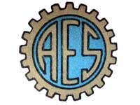

A engrenagem de 21 dentes
Esse emblema foi escolhido em concurso promovido pela AES junto a seus associados em fevereiro de 1948 quando a Associação tinha apenas três meses de existência. A Ata da 2ª reunião da Diretoria da AES em 16/12/1947 (após 1 mês da fundação) registra que foi proposto um concurso para a confecção de um "emblema" para a Associação - Livro de Atas pág 10. O Boletim da AES janeiro de 1948 nº 1, página 3, menciona que o Departamento Cultural distribuiu a todos os sócios, o regulamento do concurso para criação do distintivo para a AES. Menciona ainda que o concurso seria encerrado em 9 de fevereiro de 1948; Relatos de associados contemporâneos à fundação da AES, creditam ao professor Libaldo Costa a autoria do símbolo adotado.
Emblema da AES em 1948

Versão colorida:
fundo azul, contornos em preto e preenchimento em dourado |
|
Versão monocromática:
vazada, contornos em azul ou em preto |
Vale lembrar que esse símbolo da AES foi utilizado durante mais de 40 anos. |
Qualquer semelhança não foi mera coincidência...
A Associação dos Empregados do SENAI foi fundada por senaianos conscientes das vantagens da vida associativa.
Desde a elaboração do Estatuto provisório - aquela versão inicial aprovada na assembléia de criação da AES - já existia o propósito de uma forte cooperação entre a AES e o Departamento Regional do SENAI tendo como objetivo o bem estar dos associados, ou seja, o bem estar dos empregados do SENAI.
Esta assertiva se fundamenta no fato do primeiro Organograma da Associação já contar com os Departamentos de Saúde e Caixa Beneficente, além do Social Recreativo, Cooperativa de Consumo, Esportivo, Cultural e Editorial. A AES passou a gerir serviços importantes que beneficiavam os empregados do SENAI e este, por sua vez subsidiava e apoiava as ações da Associação. Por exemplo, o Departamento Beneficente
recebia empréstimos e, às vezes doações feitas pelo SENAI, enquanto que o Departamento de Saúde contava com o apoio do Departamento Regional para a realização de exames laboratoriais e exames radiográficos realizados no SENAI a baixo custo.
O Departamento Regional do SENAI sempre apoiou a AES cedendo espaço para sua sede, cedendo suas dependências para reuniões e encontros de associados, auxiliando a AES no controle contábil de seus departamentos, etc.
Esse ambiente cooperativo entre as duas instituições fez a AES caminhar naturalmente em busca de uma maior identificação com o SENAI. Prova disso consta de ata de Reunião de Diretoria em 22/4/1948 quando a Diretoria da Associação deliberou que todos os documentos da AES - Estatutos, Regimentos e impressos passariam a adotar capa azul, Livro de Atas pág 16v, que era a cor oficial do SENAI.
Espaço para uma inferência
Fica evidente que tanto o Vencedor do concurso, como a Comissão Julgadora perceberam a importância da manutenção da identificação entre a AES e o SENAI concebendo um emblema que retrata perfeitamente a aproximação entre as duas Instituições.
Para reforçar essa suposição basta rever o logotipo utilizado pelo SENAI naquela época (aproveite a oportunidade para contar o número de dentes da engrenagem).